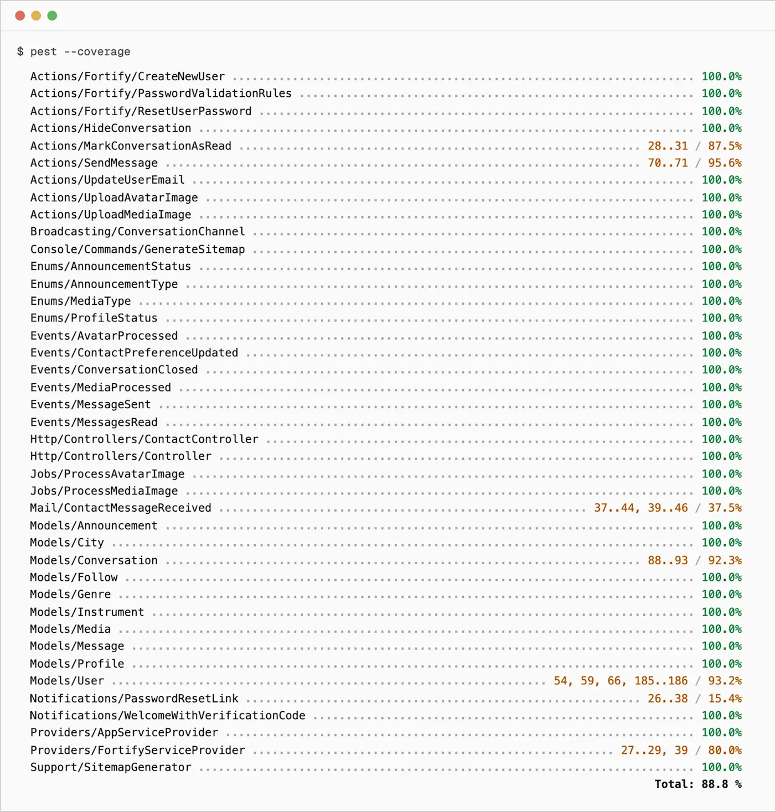

La suite de tests de Giggr s’écrit avec Pest. Le guide impose au minimum 15 tests navigateur (tests d’interface) et 15 tests serveur, soit 30 au total. Giggr atteint la cible côté navigateur et la dépasse largement côté serveur : 619 tests au total, dont 15 tests navigateur qui pilotent l’interface réelle dans Chromium via Pest browser, et 604 tests serveur (feature et unit) qui valident la logique applicative. Le détail par domaine est relevé ci-dessous.
| Famille | Domaine | Tests |
|---|---|---|
| Navigateur | Parcours d’interface réels (Pest browser, Chromium) | 15 |
| Serveur | Composants Livewire | 214 |
| Serveur | Modèles et relations | 132 |
| Serveur | Pages et parcours | 85 |
| Serveur | Actions métier | 44 |
| Serveur | Authentification | 39 |
| Serveur | Seeders et données de référence | 26 |
| Serveur | Traitements médias (jobs) | 15 |
| Serveur | Formulaire de contact | 15 |
| Serveur | Événements | 8 |
| Serveur | SEO, sitemap, honeypot | 8 |
| Serveur | Tests unitaires (enums) | 7 |
| Serveur | Messagerie | 5 |
| Serveur | Diffusion temps réel | 3 |
| Serveur | Intégrité de la base (smoke) | 3 |
| Total | Suite complète Pest | 619 |
Les tests serveur s’exécutent en mémoire (SQLite). Les tests navigateur
lancent un vrai navigateur Chromium via Pest browser et Playwright. La
commande pest --testsuite=Browser
exécute la famille navigateur seule ; pest
exécute l’ensemble.
Trois extraits représentatifs, tels qu’ils figurent dans le dépôt : un parcours utilisateur joué dans le navigateur, une règle d’autorisation côté serveur, et une règle métier d’intégration. Chacun suit la structure d’un test Pest (préparation, action, attente).
Dans un vrai Chromium, le test remplit le formulaire de connexion,
soumet, et vérifie l’arrivée sur la page /explorer
(redirection gérée par Fortify). Il prouve que l’authentification par
session, jeton CSRF compris, fonctionne de bout en bout côté interface.
it("connecte un utilisateur avec des identifiants valides", function () {
User::factory()->create([
'email' => 'marie@exemple.com',
]);
$page = visit(path('login'));
$page->fill('email', 'marie@exemple.com')
->fill('password', 'password')
->click('button[type="submit"]')
->assertPathContains('explorer'); // fortify.home = /explorer
});
Règle d’autorisation : un visiteur non connecté qui tente l’action
toggle du bouton « Suivre »
reçoit une réponse 403, et aucune ligne de suivi n’est créée en base.
Le composant Livewire est testé directement, sans navigateur.
it('guest cannot toggle', function () {
$profile = Profile::factory()->create();
Livewire::test('parts.social.follow-button', ['profileId' => $profile->id])
->call('toggle')
->assertForbidden();
expect(Follow::count())->toBe(0);
});
Règle métier d’intégration : une soumission valide du formulaire de
contact redirige sans erreur et met en file un mail vers le
destinataire lu depuis la configuration, pas écrit en dur.
Le mail est intercepté avec Mail::fake().
it('sends a ContactMessageReceived mail to the configured recipient on a valid submission', function () {
Mail::fake();
config(['mail.contact_recipient' => 'gironahugo@gmail.com']);
$this->post('/contact', validContactPayload())
->assertSessionHasNoErrors()
->assertRedirect()
->assertSessionHas('contact_success', true);
Mail::assertQueued(ContactMessageReceived::class, function ($mail) {
return $mail->hasTo('gironahugo@gmail.com')
&& $mail->hasReplyTo('alice@example.com')
&& $mail->subjectKey === 'general';
});
});
La couverture est mesurée avec Xdebug et
pest --coverage, sur le namespace
app/, c’est-à-dire la logique
applicative : modèles, actions, jobs, événements, notifications. Les 604
tests serveur couvrent 88,9 % des lignes. Les composants
de vue Livewire vivent hors de app/
et sont validés séparément, tests navigateur compris (voir la répartition
plus haut).
| Couche | Lignes couvertes | Couverture |
|---|---|---|
| Actions | 170 / 209 | 81,3 % |
| Broadcasting | 1 / 1 | 100 % |
| Console | 4 / 4 | 100 % |
| Enums | 10 / 11 | 90,9 % |
| Events | 52 / 52 | 100 % |
| Http | 18 / 18 | 100 % |
| Jobs | 40 / 40 | 100 % |
| 6 / 16 | 37,5 % | |
| Models | 216 / 223 | 96,9 % |
| Notifications | 10 / 21 | 47,6 % |
| Providers | 21 / 25 | 84,0 % |
| Support | 38 / 39 | 97,4 % |
| Total app/ | 586 / 659 | 88,9 % |
Les deux couches les plus basses sont assumées. Mail (37,5 %) et Notifications (47,6 %) correspondent au gabarit du mail de contact et au lien de réinitialisation de mot de passe : du rendu surtout déclenché par Fortify ou par des parcours couverts côté navigateur, peu sollicité par les tests serveur. Le cœur métier reste couvert de bout en bout : modèles à 96,9 %, événements, jobs et couche HTTP à 100 %.

pest --coverage sur la suite serveur (namespace app/). Total : 88,9 % des lignes. Relevé le 8 juin 2026.